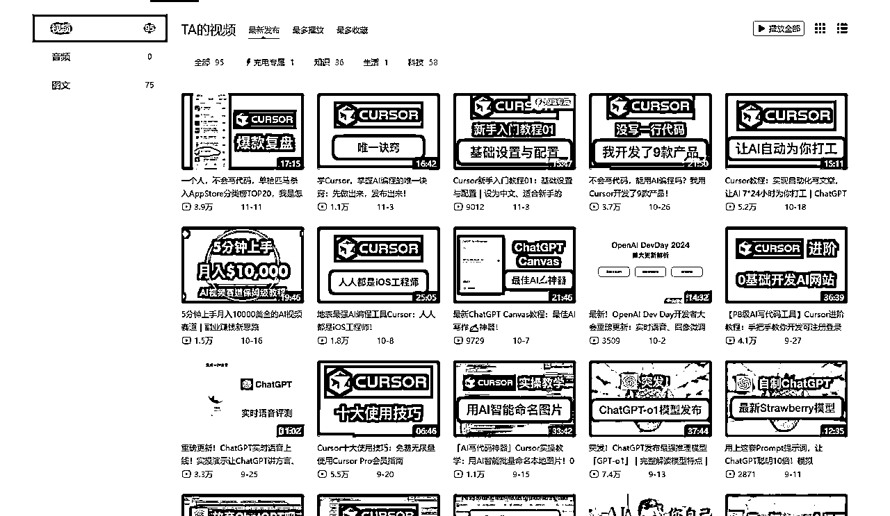
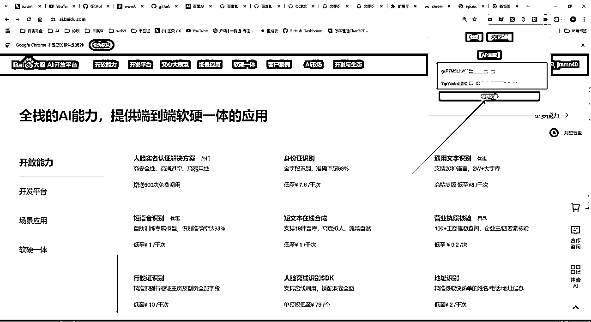
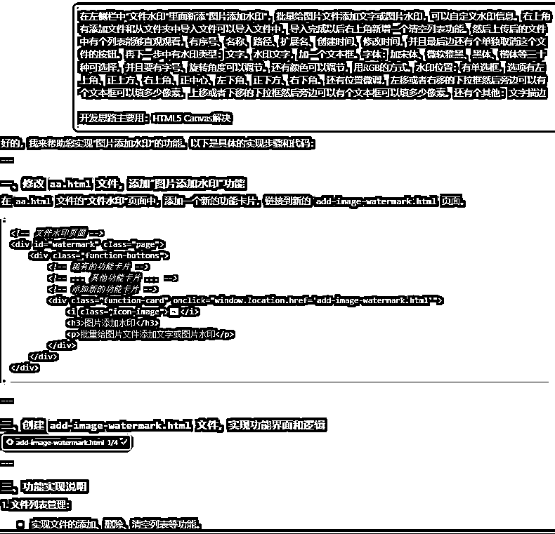
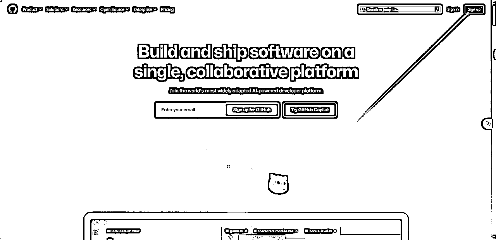
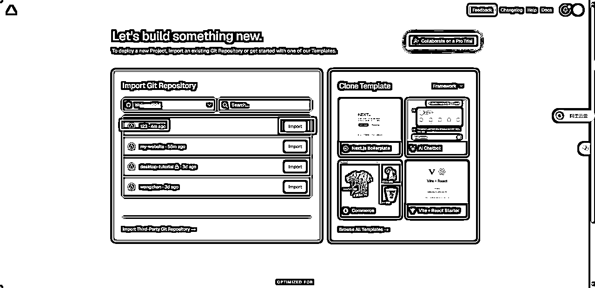
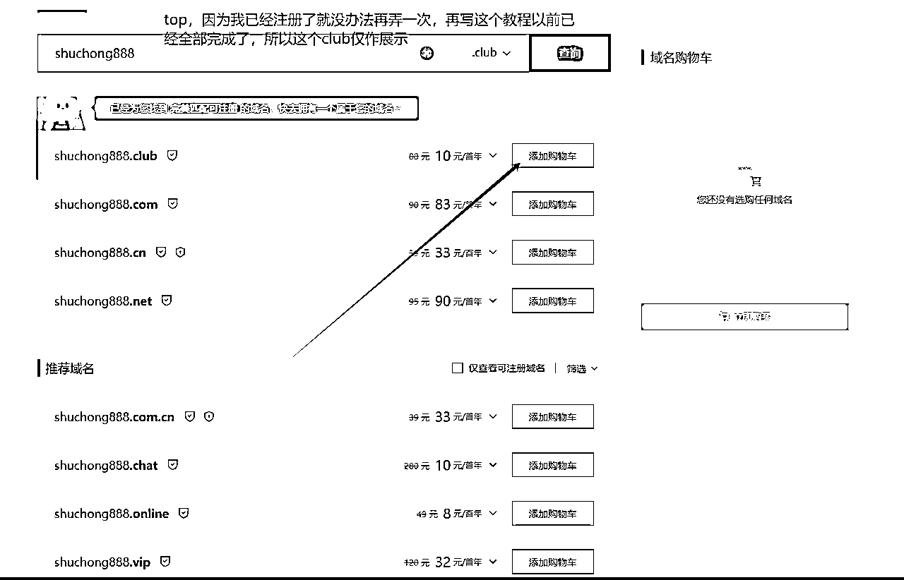
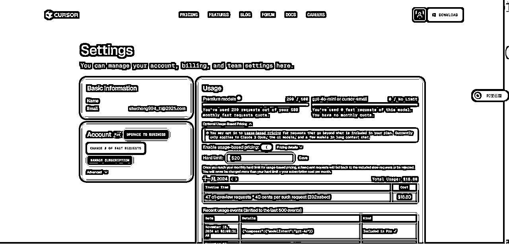

来源：https://bwvzbvg3i3.feishu.cn/docx/SOSNdArHSobMpGx87oxcETeZn2b
自己在编程这一块算不上很小白，只能说有一点基础，但是真的并不多，只懂某一块的内容，但是真的并不足以个人去开发那么多的功能，以及自己从未尝试过的板块
在看见亦仁大佬发第三个超级标的时候，感觉这个很可行，并且这一年多中，自己也一直接触和AI有关的东西，一直都知道cursor很强，但是一直都没有怎么去深耕过，觉得可行以后就开始对该产品进行了学习
首先在b站上查看了一些简单的教程，并且看见了前些天刚获得精华贴的大佬，开发的产品也直接在小红书爆了，以及在app store中排到了20名，对我个人产生了强大的自信心，感觉可行，以后脑中有什么产品了很可能具象化，不停留在想了

自己简单学习完以后就去开始尝试了，首先对cursor进行下载：https://www.cursor.com/
下载完成后安装进行使用，但是登录的过程中好像需要挂梯才能登录，不挂梯暂时没找到对应的办法，有大佬懂的可以评论区留言，梯解决办法可以去淘宝进行处理。这边就不过多赘述这种基础问题了，假如你有这个心力去学习这个我相信你会解决这个最基础的问题的，你想出海，梯也是最基础的工具
因为在亦仁大佬超级标中提到AI 应用，包含AI 网站，AI APP，AI 插件这几项，我觉得AI插件是难度较低的，所以首先对浏览器插件进行了尝试
在开发以前，有时候自己在电脑上没有登录微信或者QQ，就没办法直接截图并且OCR文字，因为有些文档或者网站是有禁止复制的，就很麻烦，所以这就产生了一个痛点，就想着尝试搞一个这样的插件吧，于是就开始了
自己在cursor纯小白，所以提问也很傻，就很简单，先让他生成最基本的，然后在一步步完善。不要上来有完美主义，一次能够达到你的要求，当然你熟练以后能够更精准的表达你的需求那肯定更好
过程中遇到问题，那就直接把错误告诉它，并且让他修复就好了，一点一点完善
很快在cursor帮助下第一版本的插件就出来了，截图功能没问题，但是ocr一直没办法正常使用
于是继续问cursor处理办法，感觉他去让我们弄的办法太复杂了(对我而言)，有没有更简单的办法？
就有了更加小白的对话，这一次他让我们去注册百度AI，因为百度AI有直接能够识别的API，只要我们接入他们的API就行，所以我就按着cursor给我的教程一步一步的去尝试
最终按着cursor给我的教程可以拿到百度AI的API key和Secret Key，有了继续的对话
最终有了最新版本的插件，将两个key填入进行保存

再使用插件功能截图后在进行ocr识别，就成功能够识别到该浏览器界面的所有文字了，解决了电脑在没有登录微信QQ等有截图ocr功能的痛点
制作完成以后，也在尝试在研究如何上传到谷歌应用商店中，提供别人下载，但是发现需要5$才能够，想想就算了，这款产品也远远大不了别人想付费的需求，但这仅仅只是我第一次的尝试
这个插件开发时长大概一个多小时，一个完全没有过制作浏览器插件经验的小白，从有一个idea到插件实现仅仅只用了一个多小时，这是之前想都不敢想的
随着完成这个以后回过头来想想，有什么是真正的痛点？并且很多人都需要的，cursor还能够实现吗？
想起有很多人一些小文件文档都是挺麻烦的，例如图片编辑、图片压缩等，又想起自己之前买过的一款工具，下方截图就是我一年多以前购买的工具，当时还买了298元，那我可以通过cursor复刻这款产品嘛，我开始尝试了
我们有可以对标的对象，所以就具象化了，我们对它的界面排版进行分析，然后总结成文字
把提示词发送给cursor以后就有了最简单的网站，那有了最简单的网站以后，我们就可以尝试逐个功能开发了，因为我还是在小白阶段，也还有一些畏难情绪(畏难不是停下)，就从最简单的开始吧
选择了我认为最简单的三个功能，就开始实践了，然后就有了下方的对话以及网站内容的结果，过程中肯定不那么顺利，遇到了问题那就解决问题，网站中有哪些功能不符合你的预期或者有某些bug就让cursor去进行修复就好了
在测试json功能不知道有没有效果怎么办？那就找gpt去生成样品就好了，现在真的太方便了，gpt也只是演示，缺乏某一项的功能现在很多都是对应的AI解决办法
重复着上面的方式一直在不断开发新的功能中遇到了一个问题，有些功能是不可能在纯前端能够实现的，得通过调用APi的方式或者前端+后端结合的方式，再或者用本地文件通过用python代码进行处理的方式
所以遇到了两次大坑在纠结为什么一直完成不了这个功能以后，再开发一个新的功能时，会提前在GPT问，得出想要的结果，然后就在cursor说出你想要的功能，并且给予开发思路

如果想在左侧栏中选择某一项的时候，出现不同的类别，那直接要求cursor就好了，指令一定要用好，并且灵活运用，cursor真的很强大，并且跟他对话过程中，生成完毕以后有时会主动给你提建议让你如何优化网站
就这样我对着大部分的功能进行了复刻，历时将近两天，我30多个功能，本身想着全部功能复刻完毕的，但是我前端至起码还算接触过，但是后端这一块我是真的没有接触，有些功能光靠前端是完成不了一些功能的，就像上面说的得通过调用APi的方式或者前端+后端结合的方式，再或者用本地文件通过用python代码进行处理的方式
目前就只对能够前端完成的一些功能进行了制作开发
制作完成以后如何让用户们用上？
这里有一种便捷的方式，因为我在23年初，那会gpt镜像很火，就尝试过在GitHub上有代码，然后在vercel上部署就能够直接使用了，所以在那会有了这个经验，接下来一步一步带着操作吧
首先，需要登录GitHub：https://github.com/ 需要挂梯才能够访问使用，但是也有不挂梯能够使用的方法，不嫌麻烦可以去b站学习一下，但是我还是推荐搞一个，因为你都想在搞海外站相关的，这是最基本的工具，你这都没有后面很难继续进行
如果没有注册的用户，点击进行注册即可

输入你想要的登录账号密码的信息
然后在登录邮箱进行认证就好了
注册完成登录以后，点击创建项目
然后点击上传文件即可
下方的文件就是依靠cursor生成的了，然后全部传到GitHub里面就可以了
成功上传后，会有多出来的那么多文件，就证明是没问题的，到这一步，我们GitHub的工作也算是完成了
vercel开始操作，首先一样打卡vercel官网：https://vercel.com/login
但是这个不同于GitHub需要注册，这个直接点击GitHub登录即可，不用额外注册
登录进来以后，点击添加项目
然后你会刚才，你刚才在GitHub上创作的项目点击Impot后进入一层，再点击Deloy就可以开始部署了

弹出这个界面就算是好了，点击continue to Dashboard
是能够正常访问的
其实到这里就能够正常发给用户们去使用了，但是域名就话就会很奇怪，例如百度域名是：www.baidu.com。我们这样怎么奇怪的域名用户也记不住，所以如果网站想要好好去运营就应该去搞一个域名才对，所以搞域名的教程继续了
我这边推荐的是腾讯云的域名，如果小白跟着我走就行，大牛的话可以直接忽略我教程
腾讯云网站：https://cloud.tencent.com/。最好就直接微信扫码登录就可以了
登录网站后，如果第一次登录的，没有实名的用户得先进行实名认证一下
实名完成以后大概就是这个样子，然后我们就可以开始购买域名了
回到腾讯云官网后，搜索"域名"即可
点击立即注册，然后输入你想要的域名，例如我的：shuchong888。设置好域名以后，还可以选择后缀，后缀不同价格也不一样，我是选择了top，因为便宜，暂时够用了，后续如果有高需求了，再更换域名即可，
确认好以后，添加添加购物车，然后购买就可以了，然后进行支付

购买完成以后直接打开：https://www.dnspod.cn/ 这个网址，因为是需要解析域名用的，登录的方式还是微信，都是腾讯云的。点击管理控制台以后，再点击我的域名，解析就可以了
然后我们需要回到vercel中，点击Settings再点击Domains
点击添加域名以后，就会出现这些需要你解析的数据
回到腾讯云解析页面点击添加记录即可，就是把vercel出现的两个记录值添加到腾讯云解析里面即可
然后上边填完以后，大概等个10分钟左右，你的域名就能够正确访问你的网站了
最后绑定好以后：https://www.shuchong888.top/ 可以直接进行访问的(就是有点卡，因为是部署到vercel中，优点是免费，就一个域名费用就可以了，服务器费用省了)，我个人从0-1的第一款产品就算是正式完成了，虽然是低阶版本，有很多功能都还不完善，但是也算是0-1跑通了所有流程，从网站开发到网站上线
自己在开发这个网站的时候，自己用卡开通了cursor会员，两天的时间用了290条快速请求配额，完成了这个网站，所以这个真的没有手写一行代码，全部都是由cursor完成的，cursor可行性真的很高很高

这款产品的最后，后续自己应该还会在这个网站上完善其余更加好用的功能，例如这些的，但是试了很久，纯前端的方式真的不可行，所以得我去好好学习一下后端的方式或者调用API的方式，后续完善好以后还是这个域名，不出意外还会再写一篇文章，也算是一个从0-1完整制作产品的教程了
或者还有什么功能需要开发的，可以评论区中留言，我可以尝试记录，后续尝试去捣鼓出来
这一款产品是免费使用的，在没有复刻我花298这款产品的95%功能不会进行任何收费的，后续如果做的比这款软件还好了，并且自己有技术和能力去添加后端用户登录，以及解决支付通道，到了那会再说吧
在看见亦仁大佬发的第三个超级标的时候，我就觉得我能搞，能去尝试，一共有十三句话，尤其在最后一句：
13/ ai+出海+短视频流量+个体全能+长期深耕，几波趋势和红利叠加，可能是少有的一个好机会，值得你重视，开始研究。
我过去的一年多，基本都在和Ai相关的产品打交道，并且对AI研究还算深，说的5个：ai+出海+短视频流量+个体全能+长期深耕。我想抓住这一次机会，但是不能光口说说。我有很多的AI群，看一些群信息，会有疑惑他们拿这些账号去干嘛？有用吗？经过一系列调研并和朋友交谈以后，找到了关键因素
这一款音乐生成软件，suno.com才是官网，而sunoai-music.com这其实就是一个镜像，但是这个镜像原理就是，在官网上注册，并充值会员后对网站进行逆向获取到API，然后接入到自己的镜像网站中，就完成了使用
并且这个网站做的非常好
并且镜像的网站会便宜一些，这里面就有了很多获利的空间，两者功能是一模一样的，有需求的客户群体又不想那么贵就可能会选择这个，并且这个网站SEO做的非常前面就在正版官网的下几个就是了，都出现在了第一页
当然这款AI工具只是一个例子，例如还有：AI绘画、AI视频、以及最常规的AI对话(gpt、claude)一类
虽然Ai网站肯定不局限于那么窄的视野，但是我觉得，这是适合自己一个很好的出发点，因为自己有很低价格的拿货渠道，并且最近两年一直关注这些，对自己而言也算是一个舒适区拔升
深知开发网站完成上线其实才是第一步，后面的SEO如何做排名，才是真正的难点，以及如何变现，是通过广告收入还是、订阅模式去获取利润。所以后续会深耕谷歌SEO这一块内容去进行学习，有结果了再来汇报，跟大家分享